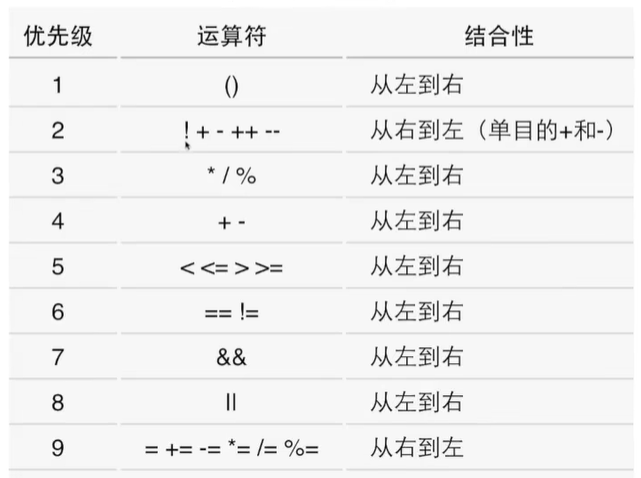
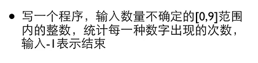
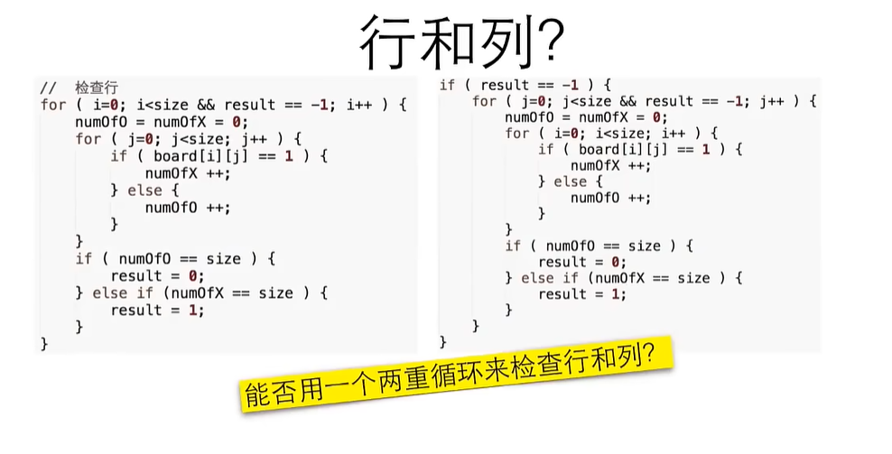
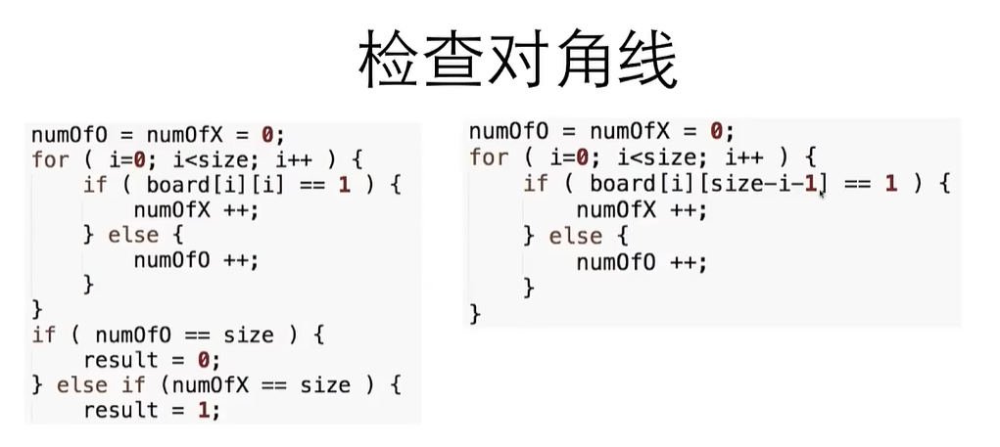
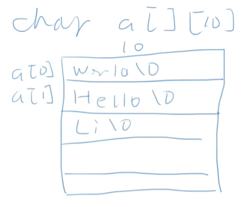
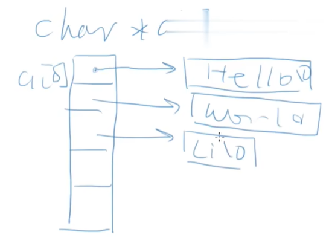
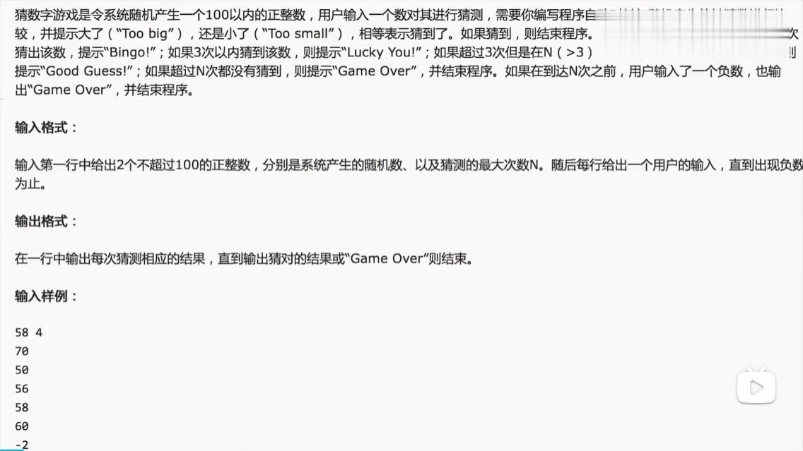
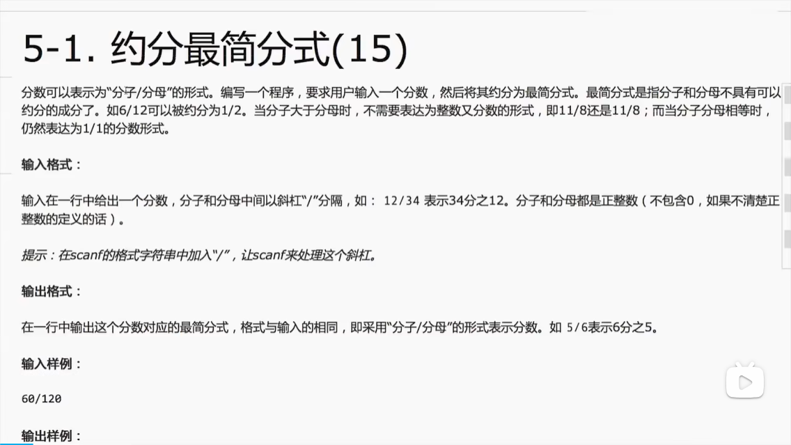

这篇不是零基础教程！这是给在学了（无论自学还是在课上学）之后，用来应对c语言考试用的，是针对c语言考试喜欢出的题型进行特化的。
虽然所有知识点基本都包括了，并且详细讲了里面的考点易错点，但是不会把最基础的怎么写这一类东西拿出来说，最起码你也是突击了一遍课本准备解决做题做不对的问题才来看这个。
因为C语言考试和实际的开发隔得很远，会开发并不一定会做那些题，所以有了这篇专为应试考点特化的文章。
同时文章对考试中喜欢考的那些类似“茴香豆有几种写法”这些没什么营养甚至不太规范的考点进行了重点提醒。
另一方面，在c中，曾流行这样的写法
a == 6 && a += 5
a == 6 || a += 5
这些写法的确是更紧凑了，代码占用的存储空间更小了，代码量更少。
但是这些写法并不好，因为它非常不利于代码的可读性和可维护性，可能会误导维护者。还可能导致未定义问题，一些顺序可能会未定义。
而且这类写法很可能会出现逻辑运算的短路问题，就是对于||，只要两边有一个是成立，那就成立；对于&&，只要左边是 false那就不用做右边了就是false。。像这样左边就 已经能决定结果，就不会做右边的运算。这就会导致右边的a+=5不会执行。
一些教材还是喜欢拿这种东西来折腾，可能跟作者的年代有关，也与可能是单纯需要一些方便考察的东西用来考察。
可以使用dev-c++，它简单快捷，不需要我们手动配置编译器。
如果要使用这个，建议编辑器里字体选黑体。
更好的是使用vs code，它在各方面更加适合使用。
首先要去下载minGW用来在windows系统上安装编译器gcc和g++。链接
然后将MinGW-w64的bin目录添加到系统环境变量Path中，通常路径类似： C:\Program Files\mingw-w64\x8664-8.1.0-posix-seh-rtv6-rev0\mingw64\bin
最后在vscode安装C/C++扩展，然后在工程目录下新建.vscode文件夹，放入以下两个文件即可：
task.json：
{
"version": "2.0.0",
"tasks": [
{
"type": "cppbuild",
"label": "C/C++: gcc.exe 生成活动文件",
"command": "gcc",
"args": [
"-fdiagnostics-color=always",
"-g",
"${file}",
"-o",
"${fileDirname}\\${fileBasenameNoExtension}.exe"
],
"options": {
"cwd": "${fileDirname}"
},
"problemMatcher": [
"$gcc"
],
"group": {
"kind": "build",
"isDefault": true
}
}
]
}
launch.json
{
"version": "0.2.0",
"configurations": [
{
"name": "gcc.exe - 生成和调试活动文件",
"type": "cppdbg",
"request": "launch",
"program": "${fileDirname}\\${fileBasenameNoExtension}.exe",
"args": [],
"stopAtEntry": false,
"cwd": "${fileDirname}",
"environment": [],
"externalConsole": false,
"MIMode": "gdb",
"miDebuggerPath": "gdb.exe",
"setupCommands": [
{
"description": "为 gdb 启用整齐打印",
"text": "-enable-pretty-printing",
"ignoreFailures": true
}
],
"preLaunchTask": "C/C++: gcc.exe 生成活动文件"
}
]
}
然后就ok了。
常见的语法错误常常是
expected xxx before yyy
就是说期望在yyy前面要有xxx。
通常是末尾漏掉分号的时候，这样对下一行报错。
因为c语言换行不意味着任何事情。
然后还有就是用了全角符号，就会stray \xxx
有可能会报三个错，比如说用了全角的分号，两个是stray \xxx，因为这个符号可能用到两个字节去表示；然后再报一个缺失分号的
printf当然可以用来直接
printf("hello world\n");
还可以格式化输出，比如%d是格式化一个数值
printf("%d", 12+34);
也是和前面打印hello world一样，把这个字符串打印出去，只是不同的是它把%d这里替换为后面输入的这个12+34的值。
注意%d是输出为十进制。%x是输出为十六进制。
%p是输出为一个内存地址那样的形式。
%f是打印float，默认是打印出存储的全部精度，还可以控制打印的小数位数，比如%.2f表示打印两位小数。
%lf是打印double
%c是打印字符
%s是打印一个字符串。
控制字符的格式为%[标志][宽度][.精度][长度]转换字符
但只需要掌握标志、宽度、精度、转换字符即可
标志是一些
考试可能会出#，是会根据打印的类型补上一个前缀
二进制、十进制则没反应，八进制补上前缀0，十六进制补0x
宽度是打印的这个东西的宽度。如果不够就在左侧补空格。
printf("%8d", 121); // >> 121
精度就是.2之类的，表示显示到小数点后几位。
除了前面说的那些%f、%p什么的，打印数字，控制字符也可以有很多花样
%d是打印十进制整数，%x是十六进制整数，
%u是无符号十进制整数
int、float、char
有几种大类：
整数：char、
浮点数
逻辑
指针
注意，整数的在内存里存的是二进制数，而浮点是需要编码的，所以不能直接拿来做运算，自然把浮点%d也不会有结果。
而且，浮点数是包含了正负无穷大（+INF和-INF）和不存在（NAN）的，所以整数除以0会报错说未定义，但是浮点数除以0是会得到NAN
以及，小数默认是使用double而不是float，所以需要1.345f这样后面加个f后缀表示。
变量名，只能包括字母、数字、下划线；第一个字不能是数字；不可以用c的关键字（如果用到可以加点下划线、数字，比如myint1，my_return之类的）。
强烈建议在变量声明时赋一个初始值，不然要是后面也忘记了赋值
另外应试可以变量名写得随便一点，课本上也是这样写的，什么int1,num1,a,b,c之类的，包括在平时举个例子之类的也可以这样写，很方便。
但是在开发中这是个坏习惯，会影响自己或别人分析代码。如果真的
可以尝试一下3/2，发现结果是1.
这是因为这是3和2都是整数，在c里面整数相除只能得到整数，也就变成了整除（丢弃小数部分，不是四舍五入）。
所以要用浮点数，也就是3.0/2.0
包括我们要存储的可能带小数时，也得使用float或float.
然后，如果是运算两边是整数和浮点数，c会先进行格式转换把两个都变成浮点数，然后再运算 （隐式转换）。
由于浮点数有精度问题，可能会出现两个相等的浮点数内部表示的不同，然后就不相等。
所以比较两个浮点数不能要用等于，而是比较它们的差距，如果它们的差距小于保存的精度差异，比如说
fabs(a-b) < 1e-12
所以，一些精确的数据计算就不能用浮点数，比如说算钱的时候。算钱可以用整数去算，以分为单位。
之前说 ，字符型是一种整数型的数据类型。因为实际上它是用整数表示。
所以，对char赋值的时候，可以赋一个数字（ascii），也可以给一个单引号括着的字符。
char c = 65;
char d = 'A'
实际上， 'c' == 49。
所以我们甚至可以搞一些好玩的：判断一个字符是不是大写字母，可以
my_char >= 'A' && my_char <= 'Z'
格式化输出的时候，用%c。当然也可以用%d来输出
所以，
char c = ' ';
scanf("%c", &c);
printf("c = %c，也是%d", c, c);
char是单引号。
比如说要在双引号里用双引号，得在里面那个前面加个反斜杠来转义。然后\\表示反斜杠本身。
还有\n、\t等特殊字符也是。
注意换行符的机制是在一行的固定一些位置，而不是多少个字符，
比如
printf("ab\t");
printf("\n");
printf("abc\t");
会能够看到这两行是对齐的。
只是通常IDE会把tab替换为四个空格（没有替换就麻烦了！对于Python等用缩进来控制的语言，tab和空格混用会导致严重的问题）
一个有意思的东西是\b，比如说abc\bd，显示出来就是abd。表示用后面这个去覆盖前面这个。
又比如说，空格我们也可以用转义字符来写，写成\x20.
bool
注意它是需要引入stdbool.h才能使用，而且实际上它就是一个int。要想显示它也只能用%d
所以c里面的bool其实不太算是一个原生的类型。
自动转换（隐式转换）：当运算符两边出现不一致的类型时，会自动转换为容量较大的类型。
char -> short -> int -> long -> long long
int -> float -> double
然后赋值给一个类型不同的内容也会自动转换，比如把1赋值给float，会自动把它转换为int；而如果把1.45赋值给int则会转换为int（丢失精度），然后一些编译器会给一个warning.
而且，printf会把所有小于int的类型转为int，把float转为double。因此
然后我们也可以手动地去做类型转换
(int)32.5就是强制把32.5转为int
在程序中会有一些常数是不变的，这些不要直接写在程序里，让人莫名其妙不知道是什么、为什么是这个数。（这种行为称为magic number）
而是定义一个常量。
const int AMOUNT = 100;
const只是一个修饰，后面还是一个变量定义的格式，只是表示这个被保护了不可变而已（后面如果试图修改就会报错）。
常量名一般用全大写，然后用下划线分隔多个单词。
这样的好处很明显，除了更易读，以后想要改这个常数（比如以后倍率变了）的时候，只需要在这个常量这里改一处就行了，更好维护。
注意如果要打印的话是%zu，因为它是一个无符号整数。
int是4个字节,double是8个字节。
但是sizeof是静态的，里面如果包含了赋值等（比如a++），并不会被执行，只是取这个值。
也叫符号常量。
比如
#define PI 3.14
实际上就是一种字面量的替换。写了这个，在编译前编译器会把代码中所有PI替换为3.14，仅此而已。
当然也可以加上一些逻辑判断什么的。
加减乘除+-*/
%是取余。
赋值（=）也是一个运算符，优先级最低。
注意赋值是有返回值的，就是我们赋给变量的值。这也是为什么我们可以a = b = 3+9这样，因为b = 9执行完后，返回值会是9，然后再赋值给a。
因此也许会有些刁难的题目，出些
int c = 1 + (b=a);
这样的题目，把赋值通过嵌入到运算内部。
+=、-=、*=、/=等。
考试也可能会故意出些没什么实际意义的奇怪写法，比如什么 total += total * (sum +12);
还有++，--，分别表示+=1、-=1。
这里就出来一个考试喜欢故意玩弄的东西了：a++与++a。
a++和++a都表示a = a+1。
所以和一般的a = a+1这样，它会返回a的值。
它们的不同在于，a++是返回a的值再给a+1，而++a是先给a+1再返回+1后的a
int a = 10;
int b = 10;
printf("a++=%d\n", a++);
printf("++b=%d\n", ++b);
比如这个我们就可以看到，a++的返回值还是10，而++b的返回值是11.
然后考试还会结合
正常的入门教材应该指出哪些是未定义行为，并且提醒初学者主动避免未定义行为，而不是像某些书籍那样去研究未定义行为（因为这种研究毫无意义）。
（当然，由于这两个的不同是这个运算的返回值，也就意味着如果我们并不用它的返回值，只是想要让a +=1而已，那两个都可以，不会有差异。比如在for里面，最后是写i++还是++i都是一样的了。）
!为非
&&为与
||为或。
注意，!是单目运算符，比所有双目运算符的优先级都高。所以 ! age > 20是不对的，会变成判断!age是否大于20.，由于!age只可能是0或1，所以!age>20恒为0（false）。

count = (count >20)?count-10 : count+10;
printf((count >20)?"20以下" : "20以上";)
条件、条件满足时的值和条件不满足时的值。
可以在表达式中暗含一个if判断。有时候只是想简单输出一个状态时很有用
其他时候不太建议这样用。
<<
>>
scanf("%d", ¶m);
里面的%d表示要读取一个整数
而后面的param是接收这个整数的变量，但是要在前面加上一个&表示取地址，这个在指针部分再详细说明。
int price = 0;
printf("你有一张100元的钞票。输入你购买商品的价格：");
scanf("%d", &price);
printf("找您%d元。", 100 - price);
然后如果用户输入的字符串不是一个数字，而是一些随便什么别的比如hello，那price就还是初始值0。
当然也可以去对这种情况去做判断来获取。
然后可以设置好格式，就可以输入多个值。比如
scanf("%d %d", &a, &b);
注意里面的空格是要求输入一个东西。比如，如果上面这个只输一个120，回车，它会要求再输入一个东西（也就是给b的）。
而如果是"%d %d "后面还多一个空格的话，那就是在输完两个数之后还要再给它一个东西，当然那个可以随便填。
所以scanf别学着printf那样在末尾加一个\n，那样的话就会被要求再输入第三个东西
出现在scanf字符串里的东西，是它要你输入的东西，不是它给你看的东西。
注意printf和scanf别乱写，比如打印的是整数就别写%f，不然会出现值是0或者是乱七八糟的数。
也不要%d，但是操作的却是一个char变量。
而且，scanf如果是读两个值，一定要按照自己设置的格式来，比如scanf("%d %d", &a, &b);，那两个值之间就一定得是用空格隔开；写的是逗号就得是逗号。不然第二个值就读不到了，就是初始值了。
if (条件){
}else if(条件){
}else{
}
if如果要执行的内容只有一行，可以不写大括号直接写在if同一行。
if (a>3) printf("a>3");
也可以这样写:
if (a>3)
printf("a>3");
因为直到最后的分号才代表这一行语句的结束。
switch (要判断的表达式){
case 常数1:
//
break;
case 常数2:
//
break;
default:
}
如果switch的表达式等于某个case后面写的数，就会执行对应的那一条。
但是注意，switch case只能用于判断int
可以发现，switch的结构是只有它有大括号，里面的case的内容不是大括号括着的。 实际上由于它实现的方式，实际上switch里面的各个case是在同一作用域的。所以，比如是case1，如果没有break跳出switch，那它会一路往下，一路把后面的case2，case3什么的都执行了。
这些case是没有划分作用域的作用，只是一个“站牌”而已，不会阻止程序继续往下运行
当条件满足时一直执行。可以从另外一个角度理解，就是类似if，只不过在条件满足、执行完一次后会再次判断
while (条件){
}
有些时候我们会希望，无论如何都先进行一次while里面的内容（比如这样处理才能产生循环所判断的数据），这时候就可以换成do-while
do {
}while ();
别忘了这种写法下while后面的分号！
注意，在dev-c++中for会报错，因为它的编译器默认没开c99。
可以自己在cmd用gcc编译。
通过编译器选项启用 C99
-std=c99。或者直接把自己的mingw添加为编译器即可。
使用continue或break可以在循环中实现跳出。
其中，continue是跳出本次循环，循环里往后的代码不再执，直接跳到下一次（比如说i++）
而break是直接结束循环，开始执行循环后面的内容。
比如说，我们可以用它来输出素数
！！注意！1不是素数！
#include <stdio.h>
#include <stdlib.h>
#include <time.h>
int is_loney(int num){
int flag = 1;
for (int i = 1; i<= num; i++){
for (int j = i; j <= num; j++){
if ((i*j == num)&&(i!=num)&&(j!=num)){
printf("%dx%d=%d ", i, j, num);
flag = 0;
break;
}
}
}
printf("\n");
return flag;
}
void main(){
int num = 0;
while (1){
printf("输入一个数：");
scanf("%d",&num);
printf("%d是否素数？%d\n\n", num, is_loney(num));
}
}
是不是想写成这样？但是实际上，我们可以直接用取余就能解决这个问题
#include <stdio.h>
#include <stdlib.h>
#include <time.h>
int is_loney(int num){
int flag = 1;
for (int i = 2; i< num; i++){
if (num % i == 0){
printf("%d是%d的系数 ", i, num);
flag = 0;
break;
}
}
printf("\n");
return flag;
}
void main(){
int num = 0;
while (1){
printf("输入一个数：");
scanf("%d",&num);
printf("%d是否素数？%d\n\n", num, is_loney(num));
}
}
如果是多重循环，如果要一次性跳出，通常是用一个flag，在每个for末尾判断如果已成功就break。
也可以使用goto。
goto out;
out;
在我们需要的地方写一个跳出点（比如这个out），然后在循环里goto即可。
但是，使用goto很容易导致各种问题，目前多数语言都取消了这种设计，更推荐使用函数包装、状态变量等来实现。
可以使用调试来调试
比如说dev-c++，先在代码上点几个断点，然后点击调试即可。
然后会出现这些按钮，左边工具栏也会显示各个变量的值。
可能会有bug，需要在主函数末尾加一个`system("pause");或者getchar();，不然会直接无视所有断点直接运行完，也就表现为终端窗口一闪而过。
注意在第一次调试之前，要先菜单栏的工具-编译器选项-代码生成/优化-连接器-产生调试信息，改为Yes。
想要执行一行，就点下一步。
不过下一步是不会把函数的步骤调试的，函数是直接一次执行完的。如果是希望调试函数里面的内容，需要点单步进入。
函数可以把某个功能包装起来，增加可读性；同时也使代码复用，避免出现代码复制现象，这是程序质量不良的表现。
void sum(int begin, int end){
}
定义时，函数名前面要写类型，里面的参数要声明。
注意，调用函数时，如果不写括号就变成是指针了
由于一个函数需要先调用才能使用（c没有变量提升等），这意味着我们必须先把所有用到的函数都写在main的前面。
否则，编译器会去尝试猜这个函数是怎么样的
void main(){
cheer(5)l
}
void cheer(int times){
// 内容
}
像这样，在cheer(5)的时候，它会猜测cheer是int cheer(int times)，但实际上并不是，所以在读到后面的真正的cheer定义的时候，就会报错。
这时候可以使用函数原型
void cheer(int times);
void main(){
cheer(5)l
}
void cheer(int times){
// 内容
}
第一行这个就是函数原型，用来提示这个函数的各个类型，避免编译器去猜又猜错。里面的参数可以只写类型不写名字。
实际起到的作用就是js中的变量提升的功能。
还有就是，原型设计的时候其实是可以不写参数，表示不清楚。但是这样编译器会猜测里面的值，结果就导致出现猜错的问题。因此不要这样，函数原型一定要把所有参数写全。
然后要注意就是，如果是那种需要使用
main也可以有返回值，那个是用来给外部调用看的，比如说如果是在shell里面调用，可以读取这个的返回值。
这个时候我们会发现，如果
void main(){
int a = 3, b =4;
swap(a, b);
}
void swap(int x, int y){
int cache = x;
x = y;
y = cache;
}
这并不能调换a和b。
而且，如果调试会发现，在swap内部，a和b会变成"在当前上下文未找到"。因为a和b是声明在main里的，现在不在作用域内。
传参时，传入的a、b是实参，会把实参的值传递给函数。
然后函数里面接收的那两个变量叫形参，是在函数定义域内新建的两个变量，你也可以把它们命名为a、b，但是和外面的a、b没有关系。
以大括号作为块，定义在块里面的就是局部变量。定义在函数里面、循环里面等的，是局部变量。
全局变量是直接写在代码根部的
局部变量可以覆盖同名全局变量
int a=5;
if (b == 2){
int a = 0;
printf("a:%d", a);
}
当然不是所有语言都是这样的。
以及，在同一个作用域就不能定义同名变量里，会报错说重定义。
int number[100];
类型表示它里面每个都是int。后面有方括号表示它是一个数组。
后面的中括号里面的数字是声明长度。可以不填，在后面赋值的时候才确定。在c99及以后也可以使用某个变量。
然后可以通过number[i]来访问里面的第i项。
给数组赋值，比如说初始化，除了用for遍历nuber[i]这种形式，给数组赋值时也可以
int number[10] = {0,0,0,0,0,0,0,0,0,0};
像这样去写来表示一个数组。
但其实有更简单的特性：如果这种大括号写法，里面的列表项数量少于数组元素数量，会自动把剩余的初始化为0.
因此，直接
int number[10] = {};
即可达到同样的效果，生成一个全为0的数组。（但是考试还是建议写{0}，更明确，和课本的一样，避免老师不认识）
还可以指定其中几个
int number[10] = {[1]=5,4,[7]= 8};
像这样，就会得到除了number[1] == 5，number[2] == 4, number[7] == 8，其它都是0.
同时，数组的长度也可以不填只写一个空的中括号在那里，它会在第一次赋值的时候根据赋值设置的最大下标，把长度设为那么多长。比如
int number[] = {0,0,0,0,0,0,0,0,0,0}; // 将会产生一个长10的数组
int number[] = {[1]=5,4,[7]= 8}; // 将会产生一个长为8的数组
注意数组不能用来赋值另一个数组。要把一个数组的所有元素交给另一个数组，必须采用遍历的方式。（后面会讲，否则会因为发生隐式转换而变成把指针赋值给它）
左值和右值
c的数组索引是从0开始的，所以索引只能在[0,数组长度-1]之间。
但是编译器并不会去检查这个下标是否会越界，所以一旦越界就可能导致严重后果。
通常报错Segmentation fault就是内存越界。
那么我们可以写点东西：

很明显，这个并不需要存储每个输入的数，只需要一个数组用于统计0-9，也就是
#include<stdio.h>
void main()
{
int number[10] = {0,0,0,0,0,0,0,0,0,0};
int input = 0;
do {
scanf("%d", &input);
if ((input >=1)&&(input <=9)){
number[input] += 1;
}
}while (input != -1);
for (int i = 0; i< 10; i++){
printf("%d:%d\t", i, number[i]);
}
}
里面多次出现了10，可以把这个数组长度10给定义为常量更好。
如果给出一个数组，不知道该怎么做的时候，那自然是先数个数，然后去遍历。
这就有点尴尬了。
其实，我们可以获取它的长度
int number[] = {0,0,0,0,0,0,0,0,0,0};
此时sizeof(number)能获取到数组占用的内存大小，而sizeof(number[0])能获取到数组第一项占用的内存大小（int是4字节），由于每一项都得是一样的（都是int），除一下即可得到长度。
sizeof(a)/sizeof(a[0])
因此，要遍历一个数组，只要用类似这样的方式就可以了：
int a[] = {1,2,3,4,5};
for (int i = 0; i < sizeof(a)/sizeof(a[0]); i++){
printf("第%d项：%d\n",i, a[i]);
}
实际上，数组就是一段连续的内存，分配了这么多（比如说是int，长度为8，那么就是连续的4*8 = 32字节）
注意，c的数组大小一旦确定下来就没办法修改。
所以通常来讲，要么就是设置长度为]]
if的执行其实还是很快的，主要问题是循环。所以我们可以尽可能去减少循环的次数
比如说判断是否是素数
int is_prime(int num){
bool result = true;
if (num == 1){
result = false;
}else {
for (int i = 2; i < num; i++){
if (num % i == 0){
result = false;
break;
}
}
}
return result;
}
原本是num-1次
那么我们可以优化一下，比如，2是素数，然后除此之外所有偶数都是2的倍数，不是素数，所以把所有2
int is_prime(int num){
bool result = true;
if ((num == 1)||((x!=2)&&(num % 2 == 0)){
result = false;
}else {
for (int i = 3; i < num; i+=2){
if (num % i == 0){
result = false;
break;
}
}
}
return result;
}
这样由num-1次变成现在这样，(num-1)/2，缩短了一半的时间。
在名称后面多加几个中括号就是多维数组。
它的本质就是外层数组的元素还是数组。
两个就是二维数组。第一个是行标，第二个是列标。
for (int i = 0; i< 3; i++){
for (int j = 0; j<5; j++){
a[i][j] = i*j;
}
}
遍历二维数组需要用两个变量来遍历索引。
同样也可以这样初始化
int a[][5] = {
{0,1,2,3,4},
{2,3,4,5,6}
}
注意，二维数组的列数不能省，不能让编译器去帮你数（虽然是列数其实是外层数组的每个元素的长度。）
实战：井字棋裁判
输入一个二维数组表示的棋盘，判断现在的胜负.
检查行，就是判断这一行X的数量够不够三个；检查列，就是这一列的X的数量够不够三个；检查对角线，就是for 0-3，判断[i][i]形成的对角线和[3-i][i]形成的对角线。


前面scanf接收数据的变量需要在前面加上&
实际上，&表示获取变量所在的内存地址。它的操作数必须是变量。
注意，32位下的内存地址是4字节（32位bit），而64位下的内存地址是8字节（64位bit）
然后，如果我们试图
int a[10];
printf("%p", &a);
printf("%p", a);
printf("%p", a[0]);
就会发现，三个是一样的。也就是说，数组本身就是一个地址！同时它的第一位也就是它的第一个元素的地址。
说明：
在下文，指针指的是一个内存地址，而指针变量指的是存储一个内存地址的变量。
有的地方可能会把两者混为一谈，但本文不采用那种讲法。
我们知道，&i表示获取i的内存地址，这就叫一个指针。我们可以声明一个变量专门存储它，这叫指针变量。
int i;
int* p = &i;
printf("%p", p);
这说的是声明一个p，类型是int*。还可以有char*等类型。
（这个可以写成int*p、int *p、int* p、int * p都行）
然后，我们可以解引用这个指针变量，是*符号，获取这个指针指的内容。比如
int i = 666;
int* p = &i;
printf("p的内容：%p,这是一个内存地址，对应的这块内存存储的内容是%d",p, *p);
运行结果
p的内容：000000000062FE14,这是一个内存地址，对应的这块内存存储的内容是666
注意不要写错了，*p是对p解引用，&p是获取p的内存地址！
我们就可以用这个，去读取i的值、修改i的值。这就是指针的用处。
那么，一个指针，实际上就是一个长度为32位或者64位（4byte或者8byte）的地址，那么不是只要随便整一个能放得下它的变量就可以存放地址了吗？
为什么指针变量要有int*、char*等不同类型呢？
比如说，我们就搞一个指针类型，表示所有指针不好吗？
实际上，int*、char*等，内容都是一样的，都是一个地址（都是4byte或8byte）。
只是，对指针的各种操作，编译器都需要知道这个指针指向的元素是多少字节一个元素：
在操作*p的时候，我们得知道所指向的这个元素，属于它的内存有多大，这样才能知道该从这个地址开始往后在多大的地方进行操作（读取/写入多少个字节）；
指针的+1、++操作跳转到下一个元素（比如说数组跳到下一个元素就是下一个数组项）功能，也需要知道下一个的话要往后跳多少。
所以，就有了各种int*、char*等类型，用来表示指向的是int、char，然后对应的指针做++就分别是向后4字节、向后1字节。
但是实际上它们都是一样的，比如
int a = 666;
int *p = &a;
char *q = &a;
printf("p:%p q: %p", p, q);
可以看到p和q的内容是一样的。
它们并不会存储说自己是int*还是char*等。c的变量都是很单纯的，内存里只存储值，类型是由编译器管理的。
所以，关键就在于，c里面引用一个变量，使用的是它起始位置的内存地址，但是并没有记录它的结束位置。这就是一切指针混乱的源头。
这就导致需要用int*等类型作为“标签”，告诉编译器如何操作，提供一点点保护，但是说到底还是由程序员自己来管理指针指向的数据有多大。包括这也导致数组的大小需要手动写在类型里（int(*)[长度]），导致无法用这个获取数组大小，传递数组为参数时必须还得传递数组大小。
实际上，在c的前身b语言中，指针甚至没有类型，导致各种危险的野指针到处跑。
由于当时设备资源有限，再加上当时编程任务的要求更为底层，c并没有彻底改革指针的结构，仅仅只是加上int*、char*等“类型”，从现在的角度，有点像是发现这个问题后，一种水多加面、面多加水的和稀泥行为，一种打补丁的无奈之举。
在这之后的更现代的语言已经通过各种数据结构，去更好地管理内存，像是Java、Python等更是直接用对象去包装数据，杜绝了指针的使用。
这些int*等的保护机制很脆弱，我们可以把指针强制转换为其它类型，然后用在别处，可能用在一些更加灵活的地方。当然，这样很容易造成野指针等问题。
比如
char a;
int *p = (int*)&a;
当然把char*转为int*本质上也就只是告诉编译器，之后是4个字节地往后跳罢了，值是不会变的。
当然，c也定义了一种非常纯粹的存储指针的类型：void*。
它没有说明指向的变量的类型，所以它不能++，也不能解引用，需要转换为别的之后才能正常使用。
int i;
int * p = &i, aa = &i;
（讲这些并不是说要这样用，别用！别搞野指针！只是了解了这些，能更全面、更完整地理解指针）
int *p, q;
这样写并不是声明两个int*，而是声明p为int*,q为int.
这时候，我们就可以通过指针，让别的函数获得也能操作我们作用域里的东西了
void f(int *p){
}
int a = 5, b = 3;
如果我们需要使用一个函数来交换a、b的值，无论是什么语言，都不会允许你这样做：
void swap(int a, int b){
int tmp = a;
a = b;
b = tmp;
}
原因首先是，不管是什么语言，其实不能swap的关键是作用域不同，我们传入进来的是swap的形参，交换它们也无法改变实参。
因此，理论上什么语言都可以改成用全局变量来解决swap(a,b)的问题：
#include <stdio.h>
int x = 3, y = 5; // 要交换的内容写在最外层，成为全局变量
void swap() { // 不需要参数，直接操作全局变量
int temp = x;
x = y;
y = temp;
}
int main() {
printf("交换前: x = %d, y = %d\n", x, y);
swap();
printf("交换后: x = %d, y = %d\n", x, y);
return 0;
}
def swap():
global x, y # 声明要修改全局变量
x, y = y, x # 交换 x, y
x, y = 3, 5
swap()
print(x, y) # 输出 5, 3
但是，这可能会导致污染全局作用域，而且swap也只能用于这两个变量。
所以，在c中，我们一般会用指针来完成。
因为，如果是直接传递一个变量，我们得到的只是它复制出来的形参，也就是只能得到值；
但是如果我们传递的是它的地址，那么就可以在后面解引用，然后就可以对它进行修改。
#include<stdio.h>
void swap(int* add_1, int* add_2){
int tmp = *add_1;
*add_1 = *add_2;
*add_2 = tmp;
}
void main(){
int a = 6, b = 32;
swap(&a, &b);
printf("a: %d, b: %d", a, b);
}
就可以用这种方式，去访问到外面的变量。
当然，换句话说就是，可以访问到（按照定义域）原本不该给你访问的变量，可能导致一些错误。
但是，虽然指针像是一种“作弊”，指针依然是一个优秀的设计，是c的精华。因为
在传递参数的时候，直接传递指针，而不是传递值，然后让形参也保存一份值导致产生多一份的拷贝；
可以使用指针直接修改外部变量；
一些数据结构的实现，完全依赖指针完成动态分配；
由于数组退化，需要使用指针来正确操作数组。
而在现代语言中，更加
比如Python、java在传递参数时，对于可变对象（list、）等是直接使用引用，（不过与使用指针相比，就无法修改不可变对象的值了）
同时，有了这些语言提供的机制和高级数据结构，就不需要手动进行内存管理、手写链表和管理数组了。
同时，随着技术的发展，更规范的做法是使用返回值、全局变量等方式去管理，而不是直接修改外部的变量。现在连全局变量都不提倡使用了。
指针出现在c里，。在现代语言已经被更安全的机制取代了。
前面说了，由于c语言的设计，指针变量需要有一个类型的类型，是指向的类型*。
那么，指向指针变量的指针，就是指向的类型**
比如
int a;
int* p = &a;
int** pp = &p;
然后我们可以发现一个有趣的现象，那么。
而且，如果需要传递好几次
当然，。并不提倡。这里也只是做个介绍而已。
把一个数组作为参数传给一个函数，会是怎么样的呢？
int isPrime(int a[]);
要传入一个数组，形参那里是这样写的。
给函数传入一个普通变量，那就是传入它的值给形参；给函数传入一个指针，也是给形参传入指针这个值。
然而，传入一个数组，传入的并不是数组，而是数组起始位置的指针。
我们可以实验一下
#include<stdio.h>
void main()
{
int a[] = {11,22,3,4,5};
printf("a :%p\n", a);
printf("&a: %p\n", &a);
printf("*a: %d\n", *a);
printf("*(a+1): %d\n", *(a+1));
int b = 8;
printf("b %p", b);
}
a :000000000062FE00
&a: 000000000062FE00
*a: 0000000000000001
b 0000000000000008
结果表明，我们很多时候可以把数组可以看作一个指针——因为，它的确是一段连续的内存，但是在大多数表达式中，它会被隐式转换为指向首元素的指针，即数组退化。
比如说我们传递数组给函数，就是只是传递了一个指向首元素的指针。
甚至我们还可以把参数直接写成一个指针也是可以的。
int isPrime(int* a);
两种写法都是通用的。因为我们使用的a[0]等数组运算符，其实就是对（退化后的）数组进行解引用，只是一种语法糖（指更简单好用的写法）。
比如a[0] 实际上就是*a，a[1]就是*(a+1)，以此类推。
正因为如此，还出现了一个有趣的现象
#include<stdio.h>
int fx(int arr[]);
void main()
{
int a[] = {1,2,3,4,5};
fx(a);
printf("a[0]: %d", a[0]);
}
int fx(int arr[]){
arr[0] = 555;
}
运行结果是a[0]: 555
由于arr实际上只是一个指针、arr[0]是对指针解引用的赋值，所以会导致它和前面的swap那样，通过指针成功修改了外部的变量。
但是，也正因为它退化成了一个指针，我们无法正常判断它的长度了。
#include<stdio.h>
int fx(int arr[]);
void main(){
int a[] = {1,2,3,4,5};
printf("现在在main判断sizeof：%d\n", sizeof(a));
fx2(a);
}
int fx2(int arr[]){
printf("现在在fx2内判断sizeof：%d", sizeof(arr));
}
结果是
现在在main判断sizeof：20
现在在fx2内判断sizeof：8
还记得前面说的吗，遍历数组需要用sizeof(a)/sizeof(a[0])来判断。而由于传递后的数组退化为指针，无法进行这个操作了，导致我们也无法正常遍历数组了。
这导致，我们必须还得把数组的长度一起传进去
int fx(int arr[], int len){
for (int i = 0; i< len; i++){
int item = arr[i];
}
}
总而言之，数组在大多数情况下，我们写数组名称，实际上都会直接退化为指向首元素的指针。这也是为什么有的人以为int *就是数组。
只有两种情况会除外，不会发生这样的退化。
比如说对于int a[] = {1,2,3,4,5};
int(*)[5]而不是int*.因为是一段连续内存，数组会发生退化，可是a[0]是值（int等），指向指针的指针int*也是一个值，不会退化。这也是为什么我们通常用int*表示
比如说我们想要返回一组数的最大值和最小值，返回值只能返回一个啊，那我们就可以像scanf这样，传入一个指针，产生的值就直接通过指针写到对应变量里面。
比如说，
还有一种用法是，函数的返回值只作为状态变量（比如0是正常，-1是异常，或者是0/1之类的），返回的数据用指针写到外部变量里去。而在更高级的语言里（c++、python等），我们可以直接raise异常来解决。
像是我们之前那些双引号括着的东西，就是字符串。它的本质是一个字符数组。不过有一个特殊的点是
char str[] = {'h', 'e', 'l', 'l', 'o', '\0'};
它末尾必须得是\0，用来标志字符串的结束，这样它才是一个字符串，否则只是一个普通的字符数组。
而用双引号写法，它等效于这样的形式，也就是自动在后面补一个\0。
所以sizeof(str)的需要的存储空间不是5而是6，但是作为一个字符串的strlen(str)是5.
由于前面说的
char str[] = "hello world"
就是声明一个字符数组。它还没有退化，就是一个数组
然而，如果是用指针的形式去定义，
char* str = "hello world";
那也就是说，这个仅仅只是一个指针，它是无法存储"hello world"这个数组的。那hello world哪去了呢？
编译器会把这个hello world在一开始的时候声明为一个const数组，然后再让str去指向它的首元素。（这个是复用的，比如说如果写char*s1、char*s2都= "hello world"，那么它们会指向同一个const数组的首元素）
两种写法是完全不同的！一个是数组，一个是指向一个const变量的指针。
而且，第二种这种写法，编译器自动生成的这个数组是const，是不能修改的！
因此，有的时候，口头上说，或者是一些书说，char*是字符串，这是错的。这不是字符串，只是一个指针。不要和字符串退化后形成的指针混淆。
由于c是需要我们自己管理内存的分配，一个字符串就拥有了两个长度：存储的长度和字符串长度。
char str[100] = "";
是声明一个存储长度为100，但是为空字符串的字符串，它里面只有str[0]有一个\0，字符串长度为0（\0不算字符串的内容）。
但是
char str[] = "";
就只会声明一个存储长度为1，里面存了一个\0，字符串长度为0的字符串。这就没有意义了，因为放不下任何字符串。
之前读取用户输入是用scanf，我们也可以用%s来格式化一个字符串。而且，由于传递字符串会退化为一个指针，所以可以直接写字符串，不需要写&
scanf("%s", str);
但是用它来读取字符串的话，和我们之前那样，如果用户输入了空格，会以为是截断。
所以。
但是无论是用哪个都要注意，要避免溢出。比如说，我们声明
char arr[8];
结果用户输入了9个字符，或者是比较多的中文那就会溢出，scanf会直接越界，写到后面的内存去了。因此必须得保护。
比如说scanf("%7s", arr);这样写，指定最多读7个字符（因为要留一个字节给\0，后面%s会自动添加一个\0）。
不过注意，这样的意思是从第7个后面开始截断，如果你scanf是一次格式化两个，那第8个字符开始就会分给第二个变量。
在函数里对数组参数进行遍历，由于传进去的数组退化为指针，所以我们得传入它的长度。
(那个数组写成int arr[]或者int* arr都是一样的)
void fx(int arr[], int len){
for (int i = 0; i < len; i++){
printf("第%d项：%d\n",i, arr[i]);
}
}
但是前面说过，字符串末尾的\0是c识别字符串用的。有了这个结束符，就能玩出很多花样来。
（以下功能都需要#include
比如说，我们就可以用函数求字符串长度了，传入一个字符串（退化为一个指针）或者传入一个指向字符串的指针，反正都是一个指针，然后它就会从这个指针开始一路往下读，遇到第一个\0，那就是这个字符串的结尾了，就可以停止了。
于是就有了strlen()获取字符串长度
strcmp是判断两个字符串是否相等，如果不相等，还能给出谁大谁小。
毕竟直接str1 == str2是不对的，这比较的是两个指针，肯定是不相等的。
而strcmp是这样用的
strcmp("abc", "abc") // 值为0，表示相等
printf("%d",strcmp("1234", "123")); // 值为1，表示第一个大于第二个
printf("%d",strcmp("123", "123455")); // 值为-1，表示第一个小于第二个
传入两个字符串变量，把第二个的内容写入到第一个的末尾，实现字符串的拼合。
char str[] = "123";
printf("%s", strcat(str, "，再加上456"));
123，再加上456
注意，这是直接对第一个字符串写入，不是返回结果！
所以别这样写，这样写是去修改编译器定义的const字符串"123"，会导致出问题！
printf("%s", strcat("123", "456"));
尤其是，strcat还不检查直接写，也不会报错，内存越界什么的都是小意思。
字符串数组，就是装着字符串（字符数组）的数组，也就是二维数组。
需要注意的点是
前面也说过，由于声明二维数组是分配一段连续内存，再加上c的指针只标注起点不标注终点，所以需要知道它的每个元素有多大，而且每个元素得一样大。比如说，
char a[][10] = {
"Hello",
"World"
}
就会变成这样：
或者排版为二维，就是

因此，我们得给每个元素分配一个大一点的，达到能够比存的字符串要多一点。
还可以写成这样：
char* a[] = {
"Hello",
"World",
"abcdefghijklmnopqrstuvwxyz"
}

第二种这个是指针数组，它就和之前说的
char* str = "hello world";
一样，后面的这个字符串是编译器帮忙声明为常量的，然后我们就只是指向这个。
这个就是一个指针数组，每个项指向后面赋值的这个字符数组的对应的项。
这样的好处是，不用担心每个字符串的长度、考虑需要给每个多大。
但是缺点是，实际的字符串是编译器帮忙声明的const字符串，无法修改。因此两种方法要根据情况选择。
main可以写参数。会读取到argc、argv
正是由于前面说到的原因，在c中函数返回一个字符串会比较麻烦。
这与c里表示数组的方式有关。
字符串，也就是字符数组，数组的通病，它只是指向首元素的指针，就只是一个地址。
而在返回之后，函数内的局部变量就会销毁。
因此，如果返回的是普通的变量比如int，那返回的是值；
返回一个字符串，调用方接收到的就会是一个指向一个已销毁变量的指针，也就是悬空指针，并不能获得到内容。
通常，我们会用，也就是说
但是这种方法并不适用于。
得动态分配堆。
这也是为什么，scanf是使用指针直接传值回去了，这种方法在缺乏各种自动化内存管理的c里，写起来足够简单
putchar是打印一个字符到终端。
实际上putchar(c)就相当于printf("%c", c);
只不过putchar写法更简单而已。
getchar是接收一个键盘按键输入。
注意它只是读取一个字符。
#include<stdio.h>
void main()
{
char input;
input = getchar();
putchar(input);
printf("！输出结束！");
}
4564
4！输出结束！
所以像这样使用循环，或者多个变量依次getchar的方式就可以获取一个字符串。
#include<stdio.h>
void main()
{
char input;
while (1){
input = getchar();
putchar(input);
printf("输出！");
}
}
不过有一个特性是，由于我们输入东西，按下回车，终端才会把东西给程序。所以，输入一长串，它是每次给一个字符给程序，程序执行完，又到getchar()那里，又接收到下一个字符
123456
1输出！2输出！3输出！4输出！5输出！6输出！
输出！
所以运行结果就是这样。最后面那个是把换行符也接收到了，然后又被putchar给打印出来，于是就换行了。
但是，这个只是玩玩罢了，真的要输入、输出一个字符串，要么printf和scanf，要么就是puts：（gets已经被废弃，不做介绍）
puts是用来打印一个字符串并换行的。
实际上就是等价于printf("%s\n", str)
有一些课程陷入到一种钻牛角尖的地方去，比如说讲到getchar，getchar里面有个EOF，于是就专门大篇幅讲那个。但实际上正常使用EOF基本不会被触发——毕竟普通人也不知道按ctrl+z/ctrl+d去触发啊
就是讲了很多里面很可能这辈子都用不到的设计。
在自学一门语言的时候，很容易遇到这个，比如说使用软件
int a表示声明一个整形
int * p表示p指向一个int
int arr[10]表示arr是一个长为10的数组，里面的10个元素都是int。
int * arr[10]表示声明一个数组arr，里面每个都是int*，也就是装了10个指向int的指针。也就是说arr是指针数组。
int (*arr)[10]表示声明一个指针arr，它指向一个数组int [10]。中间用括号括起来提高优先级，也就是先读出它声明的是*arr，而之所以顺序是这样是因为c要求把[]放在末尾，所以要用括号提升优先级，并且把int [10]分别放在前后了。
使用rand()即可产生一个随机数。
使用方法会有些复杂：
#include <stdio.h>
#include <stdlib.h>
#include <time.h>
int main(){
srand(time(0));
int a = rand();
}
主函数第一行这个可以不用太了解，或者知道它是设置一个随机种子，输入的是时间，来让数随机即可。
这样我们就能得到一个随机数a。
但是这样产生的随机数是很大的，我们可以通过取余的方式获取指定大小以下的随机数，
比如
rand() % 100，即可生成100以内的随机数。（当然，这个是[0,99]，也许还得+1变成[1,100]）
那么，写一个猜100以内的随机数的游戏，可能会是这样的：
#include <stdio.h>
#include <stdlib.h>
#include <time.h>
void main(){
int num = 0;
int ans = 0;
int trail_count = 0;
// 生成num
srand(time(0));
num = rand() % 100;
printf("已生成一个0-100的随机数。猜一猜是什么：");
scanf("%d", &ans);
while (ans!=num){
trail_count ++;
printf("猜错了！");
if (ans>num){
printf("比这要小。");
}else {
printf("比这要大。");
}
scanf("%d", &ans);
}
trail_count ++; // 猜对猜错，都得+1
printf("猜对了！你猜了%d次来猜中。", trail_count);
}
然后我们可以发现，实际上scanf让用户输入猜的数，以及让次数++这个在代码中重复了（在循环内和循环外都有），这就是一个标志，意味着实际上我们的代码是没有充分利用循环的，实际上我们可以通过改成do-while来优化
优化的方法很简单，就是我们看到它这样就知道是可以用do-while优化，所以就先把循环体外面改成do while，然后再顺序下来走第一遍（就是不需判断的那遍do），看看如何调整，怎么写行为能够同时满足猜中和没猜中都能合适。
#include <stdio.h>
#include <stdlib.h>
#include <time.h>
void main(){
int num = 0;
int ans = 0;
int trail_count = 0;
// 生成num
srand(time(0));
num = rand() % 100;
printf("已生成一个0-100的随机数。");
do{
printf("\n猜一猜是什么：");
scanf("%d", &ans);
trail_count ++;
if (ans>num){
printf("不，比这要小。");
}else if (ans<num){
printf("不，比这要大。");
}
}while (ans != num);
printf("猜对了！你猜了%d次来猜中。", trail_count);
}
更复杂一点还有

#include<stdio.h>
void main()
{
int num = 0;
int n = 0;
scanf("%d %d", &num, &n);
int trail_count = 0;
int is_success = 0;
int input = 0;
while (trail_count <= n){
scanf("%d", &input);
trail_count ++;
if (input == num){
is_success = 1;
break;
}else if (input == -1){
break;
}else if (input > num){
printf("Too big");
}else if (input < num){
printf("Too small");
}
}
if (is_success){
if (trail_count == 1){
printf("Bingo!");
}else if (trail_count <=3){
printf("Lucky You!");
}else {
printf("Good Guess!");
}
}else {
printf("Game Over");
}
}
算n个数的平均数。由于我们不知道它需要传入多少个数，一种非常简便的方法是可以让用户输入一系列数，最后输入一个结束符（比如可以规定为-1）来表示输入结束开始计算。
#include <stdio.h>
#include <stdlib.h>
#include <time.h>
void main(){
int input_sum = 0;
int count = 0;
int input = 0;
do{
scanf("%d", &input);
if (input != -1){
input_sum += input;
count ++;
}
}
while (input != -1);
printf("输入的%d个数的平均数为%d/%d=%.2f", count, input_sum , count, 1.0*input_sum / count );
}
对一个整数%10，就能获得它的个位；
对一个整数/10（整除10），就能去掉它的个位。
两种方法都可以，就看要提取的是哪个部分了
于是我们既可以写出这样的一个让输入的整数逆序的
#include <stdio.h>
#include <stdlib.h>
#include <time.h>
void main(){
int num = 0;
printf("输入一个数：");
scanf("%d",&num);
int count = 0;
int i = 0;
int reverse = 0;
while (num != 0){
i = num%10;
reverse = reverse * 10 + i;
printf("%d, up till now:%d\n", i,reverse);
num /= 10;
}
}
然后我们可以发现，用这种方法来获取正序的每个位是比较困难的。可以反过来，是从左到右去读，这就需要和它位数一样多的10^n去取余。
#include <stdio.h>
void main(){
int num = 0;
printf("输入一个数：");
scanf("%d",&num);
int num_i = num;
int baser = 10;
while (num_i/baser >= 10 ){
baser *= 10;
}
printf("%d和%d的位数一样多。",num, baser);
for (int i = baser; i>= 1 ; i/=10){
printf("%d", num_i/i);
num_i = num_i % i;
if (i != 1){
printf(" ");
}
}
}
这样就能正常运行了。不必担心处理5000之类的后面都是0的数会失效（如果是用第一种的这种基于%的方法获取，然后再翻转一次顺序的话，不会那么好。
输入一个数：500241
500241和100000的位数一样多。5 0 0 2 4 1
--------------------------------
当然，获取了它有多少位之后，我们也可以直接去获取逆序，然后逐个乘以1、10、100......这样也可以。
找a、b的最大公约数，通常有两种方法：枚举和
枚举就很简单了，遍历所有小于a、b的数，记下里面所有能够同时整除a和b的数（使用覆盖的方式，即可找到最大的那个）。
int max_pon = 0;
for (int i = 1; i<=son; i++){
if ((son % i == 0)&& (mom % i == 0)){
max_pon = i;
}
}
利用这个可以做分式化简

#include<stdio.h>
void main()
{
int son = 0, mom = 0;
scanf("%d/%d", &son, &mom);
int max_pon = 0;
for (int i = 1; i<=son; i++){
if ((son % i == 0)&& (mom % i == 0)){
max_pon = i;
}
}
son /= max_pon;
mom /= max_pon;
printf("%d/%d", son, mom);
}
不要觉得这个很基础，实际上很常见，就是int一个变量没有赋值，然后导致出现问题。
int a;
int b;
while (true){
settimeout(function(){
for (let item of document.getElementsByTagName("input"){
if (item.getAttrbute("type" === "radio")){
item.click():
}
})
}, 10000)
}
避免的方法也很简单，一定要养成声明变量赋初始值的好习惯！
哪怕是在别的更加现代的语言，哪怕不会出现这个问题，也这样做！
比如说
int i = 6;
scanf("%d", i);
像这样忘记写&.
由于地址和整数的大小有时候是一样的4 byte，再加上。结果就给传了个6进去，那它就变成去在0x00000006（不一定是这个，前面补多少个0看是32位还是64位）的位置写入。
操作系统会提供内存保护，不允许访问分给其它程序的内存。所以，如果这个地方可以写入，就会写到错误的地方，但是不会报错；
如果这个地址恰好是受保护的区域，那就会报错Segmentation fault。
C语言本身不提供输入输出语句。printf、scanf等是由标准库stdio.h提供的。
ASCII中，65为A，97为a，A往后32才是a，也就是说Z和a之间还有几个别的符号。
0%任何数都是0. 可以这样想：0自己都是0了，它再怎么样除，能余下来的也都只有0.
算法可以有0个或多个输入，但是必须有1个以上输出！
一个程序是由函数组成的。
记得，一个字符串最后会有一个"\0"！所以，字符串"a"是要2字节的空间的！
C语言中，二维数组在内存中存储，遵循 按行主顺序 放入。
对于那些c实践题，说是对一个数进行处理，通常都是用scanf输入进来。包括数组也是，用for来一个一个数输入jin'lai
比如说
#include<stdio.h>
#include <string.h>
void main()
{
char a[80] = "AB", b[80] = "LMNP"; int i = 0;
strcat(a, b);
while (a[i++]!='\0') b[i] = a[i];
puts(b);
}
结果是LBLMNP！
不是ABLMNP
首先拼合之后a == "ABLMNP"
后面的这个循环，它是i++，所以在while判断取的是a[i]，但是在循环里面的时候++生效了，里面判断的实际上是下一个了，所以里面的复制，i是从1开始的！！！！所以L没有被覆写为A ！
# include <stdio.h>
int main(){
int num = 0;
while (num <= 2){
num ++;
printf("%d", num);
}
}
需要注意，它不是for，这个结构是会导致num它能获得到的值有4个！
0，1，2，3
因为num++是在中间的，导致它让num = 3之后，printf能获得它，把它打印出来，然后才是到while的头部，判定它无法进入下一次循环！
而for，相当于是在while的末尾才进行++！
比如说，a是97，要求z的位置。
一共有26个字母，所以A、B、C.....X、Y、z一共26.[a,z]
但是我们说的+n，就是从A开始往后数n，也就应该是(a,z]，比如a往后数1就是b而不是a。
所以，(a,z]的话，少了一个a，就变成25个。所以z是97+25！
这个也可以用等差数列的公式来证明，an = a1 + (n-1)d，因为间隔是比数量少1，所以要乘的是n-1的距离d。
总而言之，z是97+25 = 122
二维数组a有m列，则在a[i][j]前面的元素有i*m+j项
比如说
1 2 3
4 5 6
7 8 9
6，是第二行第三个，a[1][2]，1、2刚好就是除去自己这一行、这一列的数量。所以行数乘以一行多少格，然后加上那几个，即可。
无论是变大进制还是小进制都是这个方法：
比如说十进制变八进制
用 8 除 该数，并记录余数，直到商变 0，然后 倒序排列余数。
求121转八进制
121 / 8 = 15 -- 1
15 / 8 = 1 -- 7
1 / 8 = 0 -- 1
把1、7、1倒序排列，就是转换的171.
121转16进制：
121 / 16 = 7 --9
7/ 16 = 0 -- 7
倒序得到79
x % n的结果是[0, n-1]的一个整数。
比如说，1234 % 100是34.
这样就能很方便地解决相关问题，尤其是，把rand()生成的随机数变成一个100以内的数。
这些小技巧是写代码的时候可以节省精力、减少出错的方法，不仅适合用于考试，也是平时写代码用的。
对于很多东西，包括函数、一大坨判断（就是一堆if-else if或者switch-case的那种），我们可以使用单一出口技巧来写。
if (a>1){
printf("a>1");
}
这样写死在代码里面，后面要修改的时候要改好几处；
同时，这样的话要读这个代码，也得挨个情况看看都做了什么。
int max(int a, int b){
if (a > b){
return a;
} else{
return b;
}
}
像这样就不太好。像是这个，其实就是返回if比较处理的值，如果是想要改掉，就得把这两处都改了。
可以改成单一出口，这样就只有一个IO输出的地方，这样看的时候，就不需要看这一坨if-else if都干了什么，printf只有一处，就一眼就看到是怎么运作的了。